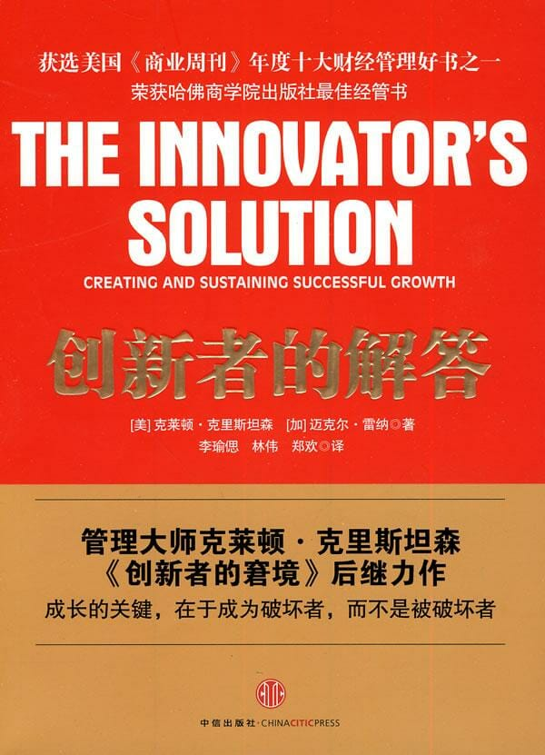

注：【】部分为笔者心得，非原文摘抄。
- 对于任何一家企业来说，增长都是至关重要的，因为每家企业都要靠利润的增长来为股东创造价值。
- 盲目追求进步的结果甚至比原地踏步更糟糕。
- 当核心业务趋向成熟，投资者就开始产生新的增长述求。
- 投资者有一种极端倾向，就是喜欢把未来的愿景折合成当前企业的股票价值。
- 股价的涨跌往往不是简单地受到业务增长方向的影响（即正增长或负增长），在很大程度上也受企业的赢利状况和现金流量变化率中“超出预期的变化率”的影响。
- 通常来说，资本市场对前景未知的新业务下赌注时，都是根据企业过去的业绩表现来作决定。
- 在追求增长的过程中，最令人望而却步的风险可能就在于：一旦稍有失利，再获成功的机会将会非常渺茫。
- 你不能只看一个过程的结果——不论这个过程创造出的结果是否能够带来可以预测的未来成果——就下结论，你必须了解这个过程本身。
- 在每家企业的创新过程中，中层管理者都扮演着十分重要的角色，他们要负责把尚未成熟的创意培育成为羽翼丰满的业务计划，这样才能给高管留下深刻印象，赢得企业投资。
- 创意的塑造过程也受到个人因素的影响。
- 对于追求创新成长的企业来说，最核心的问题不是缺少好创意。真正的问题出在塑造的过程上。
- 预知能力的来源是扎实的理论基础。
- 如果在两种不同条件下，不同的因果关系带来的是相同的结果，那么从获得可预测性的角度来看，这两种不同条件实际上没有本质的区别。
- 管理者需要确定自己当前处于什么条件下，当然也必须清楚知道他们“不处于”什么条件下。
- 只有当一个理论不但能说明什么样的行为能引领我们走向成功，并且能指出随着企业环境的变化，这样的行为结果会产生何种变化时，我们才能充分相信这一理论。
- 不负责任的分类方法制造出一些“放之四海而皆准”的建议，而这些建议在很多情况下会导致错误的结果。
- 资源多少和竞争结果并无太大关系。
- 延续性创新定位于要求更高的高端客户，为其提供超越当前市场水平的更优秀的产品性能。
- 破坏性创新者不会去尝试为现有的市场客户提供更好的产品，他们更倾向于通过引入稍逊一筹的产品或服务来破坏和重新定义当前市场。
- 需求是创造之母。
- 延续性技术策略并不适合用来建立新成长业务。
- 在延续性创新的战场上，先入者有压倒性优势；而在破坏性创新中，则有着后来者居上的传统。
- 如果你的尝试对于一个重要的先入者来说不过是延续性创新而已，那么你就是在打一场必输之仗。
- 破坏并不能保证成功，但是一定能助力成功。
- 所谓价值网络就是企业的生存环境，企业在其间建立属于自己的成本结构和运营流程，而且和供应商及合作伙伴进行合作，服务于某一类客户并从中赢利。
- 在价值网络中，每个企业的竞争战略以及成本结构和市场客户定位都决定了它对于创新抱有什么样的价值观。这些价值观反过来决定了这些厂商在选择破坏性创新和延续性创新时将面临怎样的机遇和风险。
- 虽然面对新市场的破坏性产品一开始要在它们独有的价值网络中面对没有消费者的局面，但是一旦这些产品的性能得到提升，最终还是会吸引原有价值网络中的一些客户，从低端客户开始，把客户逐渐吸引到新的价值网络中来。
- 破坏性创新从不正面进攻主流市场，更多的是将主流价值网络中的客户拉到新的价值网络中，因为这部分客户发现使用新产品能带来更多的便利。
- 【降低技术门槛的技术具备成为新市场破坏策略的潜力。】
- 通常来说，低端市场破坏性策略往往是降低公司管理成本，是公司能够在毛收入较低的情况下赚取可观利润，同时伴随着对制造过程或业务流程的改进，提升资产周转率。
- 中国最具有竞争力的资产就是其广阔的未开发的“零消费”市场。
- 在“零消费”市场的竞争经常成为创新成长最大来源，在这个市场中可能充斥了各种无法胜任工作要求的“全能型”产品。
- 低端市场破坏者的市场推广任务就是从低成本业务模式向高利润产品市场提升。
- 如果不按照“需要完成的工作”来细分市场，而是按照产品属性和客户属性来进行划分的话，厂商势必将走上一条自取灭亡的不规律。
- 专一是一把双刃剑，既能带来好处又能带来坏处，而坏处比好处更容易被量化。
- 专一是一种挑战——除非你能意识到唯有专一才能让你放弃不属于自己的市场。
- 如果能够将全部注意力倾入在客户想要完成的工作上，会大大提高新产品研发的胜算。
- 如果只依靠现有数据来细分市场，而无视客户的实际需求，那么就无法预测新产品是否能帮助客户完成重要的工作。
- 不要把过去的性能评估数据用到新产品的研发过程中来。
- 市场上大多数零售渠道和分销渠道都是按照产品类别来组建的，而不是按照客户任务组建的。
- 寻找或建立新渠道，其实意味着你放弃追求在现有渠道无法兑现的利润。
- 对于那些能够出色完成任务的品牌，顾客花起钱来总是毫不吝啬的。
- 如果破坏性产品被用对了地方，那么客户会感到非常满意，从而强化了企业的品牌力量，即使破坏性产品的功能不如主流产品那么强大也没关系，因为客户是以他当时所处的情境和任务的完成情况来评估工具的质量的。
- 为破坏性任务创造针对性品牌能是产品与众不同，理清了产品用途，取悦了客户，从而也强化了品牌。
- 一般来说，人们不愿意轻易作出改变。
- 想要让客户优先完成过去并不关心的任务，是胜算极低的。客户不会因为有一个新产品出来了就“改变任务”。新产品只有致力于更好地帮助客户完成现有任务，才有可能获得成功。
- 成功占领低端市场的关键就在于创造一种能在低端市场以低价格赚取高利润的业务模式。
- 对后来者来说，破坏就是机遇。
- 主管资源分配的高管应该以典型模式而不是数字规则为标准来衡量新的计划，作出预算决定。
- 创新管理者应该选择那些是新产品为助动燃料的渠道商，帮助他们向高端的渠道市场挺近。当破坏性新产品帮助渠道商破坏了他们的竞争对手时，渠道商就能成为构建破坏性业务的可靠力量。
- 破坏性产品需要破坏性渠道。
- 客户也是渠道。
- 过去的经验可能会误导未来的方向，因此，只有正确的理论才能指引未来。
- 共生的产品架构往往能优化产品的功能和可靠性。
- 最好的策略就是把子弹卖给交战双方。
- 高利润守恒定律：当模块化和货品化的共同作用使得价值链上某一阶段的高利润凭空消失时，与之相邻的阶段中往往会出现能够聚集高利润的专利性产品。
- 创新行动常常失败，不是因为一些致命的技术缺陷，也不是因为市场没有准备好，而在于负责创新业务建设的管理者或部门所具备的能力和所负责的业务不匹配。
- 流程的定义或演变都是为了解决特定任务。
- 通常要检讨的最关键的流程不是和后勤、开发、制造以及客户服务等相关的显而易见的增值流程，而是那些能够左右投资决定的支持流程。
- 资源和操作流程往往能决定组织的能力范围，而价值观往往代表限制——它决定了组织不能参与的业务范围。
- 公司能够年复一年做出高质量的工作，这因为公司能力扎根于公司的流程和价值观中，而不是资源中。
- 对延续性技术的投资也符合领先企业的价值观，因为它承诺提供跟高的或成本更低的产品，从而提高利润率。
- 规模较小的破坏性企业实际上在新兴的成长市场中更有竞争力。
- 一个创新举措必须与上层组织的流程和价值观相符，否则创新无法成功。
- 破坏性是相对而言的，对一家企业来说是破坏性创新，可能对另一家企业来说属于延续性改良。
- 想要是成功的概率最大化，就意味着要识别出有能力的管理者，他们能够在此时此地成功地克服建设新业务的挑战。
- 潜力是不能用特征来衡量的，而是有获得特征和未来环境所需技能的能力来衡量的。
- 要寻求的是能够从未来经验教训中汲取教训，具有较高潜力的员工。
- 重量级团队是创建新流程或新的合作方式的工具，反之，轻量级团队则是开发现有流程的工具。
- 要取得成功，重量级团队应该设在同一地点。
- 企业只有建立拥有新成本结构的新业务部门，才可能创建新的优先级标准或价值观。
- 在建设新成长业务时，CEO 的关键职能之一，就是决定新的投资项目中采取主流企业的哪些流程和管理费用。
- 【创新是冒险，所以要特别注意创新行为的试错成本。】
- 在延续性技术战争中，地位稳固的公司几乎总是赢家。
- 创新的想法总是出现在一个不成熟的、尚未成型的环境下，接着在形成过程中转化为有血有肉的业务计划，成为能够得到投资的完整策略。
- 谋划型策略的决策流程所有意识的、分析性的，它往往基于对市场增长、细分规模、客户需求、竞争对手的优劣势、技术轨迹等数据进行严格分析。谋划型流程中制定的策略通常是有始有终的，并“自上而下”地实施。
- 应急型策略在组织内部如气泡般涌现，这是中层管理人员、工程师、销售和财务人员日常做出的优先次序和投资决策的累计效应。这些往往都是战略性的日常运作决策，做出这些决策的并非那些富有远见、具备未来意识或战略精神的人。
- 如果指导资源分配优先级的价值观不能与企业的谋划型策略结合在一起（实际上它们往往也确实没有有机结合起来），那么企业的谋划型策略和实际经营策略之间则可能出现很大差距。
- 单位用料的毛利率体现了在这个关键的资源分配决策中组织的价值观。
- 创业之初，高级管理人员最重要的职责之一，就是在尝试中获得新的经验，以此判断战略的可行性，然后通过周密的谋划，将经验融入流程中。
- 卓有成效的管理者最终都能找出构造成功策略的可行模式。
- 在一家企业最初的破坏性业务当中，从应急型策略到谋划型策略模式的转化是成功的关键。
- 仅仅寻求正确的策略还不够深入，关键是要管理策略开发的流程。
- 为了保证获得投资，许多具有潜在破坏性的想法被塑造为延续性创新项目，并且把目标锁定在大规模的显性消费市场中，这样一来，恰恰正是推动创业探险起步的筹资流程，实际上却成了扼杀破坏性创新的绞索。
- 【风投无圣人，搭讪需谨慎！】
- 【创业者应该分清楚什么钱该拿，什么钱不该拿。】
- 初创企业很少能在延续性创新的战斗中取胜。
- 和好钱一样，坏钱既可以来自风险投资，也可以来自企业内部投资。
- 延续性创新是“维持”公司股价的关键。
- 只有创造新的破坏性业务，才能使企业的成长速度超过投资者的预期，并且，这样可以创造出超乎寻常的股东价值。
- 要继续长期地创造股东价值，唯一的途径就是创建新的破坏性业务。
- 当企业的投资资本急于追求成长，好钱就会变成坏钱，因为这会引起一系列不可避免的错误决定。
- 把模式识别，而非财务结果，作为潜在的失速点的信号。
- 高管层在展望未来时，应谨慎地参照任何类型的历史数据，因为可靠的数据通常都是对过去的记录，只有在未来类似于过去的情况下，才具有准确的指导意义。
- 在好钱变成坏钱之前，创建投资规划蓝图。
- 尽量不使用原有业务的赢利来补贴新成长业务的损失。
- 在核心业务仍健康发展时，推出启动新的成长业务。
- 在设定的节奏下收购新的成长业务。
- 施政中的第二个当务之急是保持以小单位运营。
- 将给予新成长业务的补贴最小化，第一，它有助于促进应急型策略流程，迫使投资项目加快试错速度，试探客户是否愿意支付有吸引力的价格来购买企业的产品。第二，在可行的范围内迫使投资项目尽快获得赢利，这有助于在核心业务发展停滞时避免被淘汰的命运。
- 企业资本对风险投资的区分并不重要，真正重要的是是否愿意耐心等待成长。
- 【有时候，风险资金就像注入猪体内的水，屠夫可以获得更多收益，但猪很痛苦！】
- 很多情况下的投资失败，是因为资本来源的企业急于追求成长，却对赢利有反常的耐心。
- 在众多的公司当中，那些成功地捕获到了随后的几波潮流，并在行业中成为领头羊的幸运儿，在管理破坏性业务时，绝大多数仍由公司的创始人操刀。只有少数公司由职业经理人管理，并成功创建了新的破坏性成长业务。
- 创造成长引擎就是要把破坏的能力根植于流程中。
- 投资成长的最佳时机，就是在企业开始成长的时候。
- 创建专门的团队和流程来塑造创新构想。
- 很少有管理者能够完全按照自由意愿去运用职权，他们的行为往往会被各种因素所影响。